Séries temporelles
Contenu du cours
Dépendance temporelle et spatiale
Propriétés des séries temporelles
Modèles ARIMA pour les séries temporelles
Ajuster les modèles ARIMA dans R
Prévisions à partir d’un modèle
Dépendance temporelle dans les modèles additifs et bayésiens
Dépendance temporelle et spatiale
La dépendance temporelle ou spatiale présente dans plusieurs jeux de données est due au fait que les observations qui sont rapprochées, dans le temps ou l’espace, sont plus semblables que celles éloignées.
Dans un contexte spatial, ce principe est parfois appelé “première loi de la géographie” et exprimé par la citation de Waldo Tobler: “Everything is related to everything else, but near things are more related than distant things.” (Tout est relié, mais les choses rapprochées le sont davantage que celles éloignées).
En statistique, nous parlons souvent d’autocorrélation pour désigner la corrélation qui existe entre les mesures d’une même variable prise à différents moments ou différents lieux.
Dépendance intrinsèque ou induite
Il existe deux types fondamentaux de dépendance spatiale ou temporelle sur une variable mesurée \(y\): une dépendance intrinsèque à \(y\), ou une dépendance induite par des variables externes influençant \(y\), qui sont elles-mêmes corrélées dans l’espace ou dans le temps.
Par exemple, supposons que la croissance d’une plante à l’année \(t + 1\) est corrélée à celle de l’année \(t\):
si cette corrélation est due à une corrélation dans le climat qui affecte la croissance de la plante entre les années successives, il s’agit d’une dépendance induite;
si la corrélation est due au fait que la croissance au temps \(t\) détermine (par la taille des feuilles et racines) la quantité de ressources absorbées par la plante au temps \(t+1\), alors il s’agit d’une dépendance intrinsèque.
Supposons maintenant que l’abondance d’une espèce soit corrélée entre deux sites rapprochés:
cette dépendance spatiale peut être induite si elle est due à une corrélation spatiale des facteurs d’habitat qui favorisent ou défavorisent l’espèce;
ou elle peut être intrinsèque si elle est due à la dispersion d’individus entre sites rapprochés.
Dans plusieurs cas, les deux types de dépendance affectent une variable donnée.
Si la dépendance est simplement induite et que les variables externes qui en sont la cause sont incluses dans le modèle expliquant \(y\), alors les résidus du modèle seront indépendants et nous pouvons utiliser toutes les méthodes déjà vues qui ignorent la dépendance temporelle et spatiale.
Cependant, si la dépendance est intrinsèque ou due à des influences externes non-mesurées, alors il faudra tenir compte de la dépendance spatiale et temporelle des résidus dans le modèle.
Différentes façons de modéliser les effets spatiaux et temporels
Dans ce cours et le suivant, nous modéliserons directement les corrélations temporelles et spatiales de nos données. Il est utile de comparer cette approche à d’autres façons d’inclure des aspects temporels et spatiaux dans un modèle statistique, qui ont été vues précédemment.
D’abord, nous pourrions inclure des prédicteurs dans le modèle qui représentent le temps (ex.: année) ou la position (ex.: longitude, latitude). De tels prédicteurs peuvent être utiles pour détecter une tendance ou un gradient systématique à grande échelle, que cette tendance soit linéaire ou non (par exemple, avec un modèle additif).
En contraste à cette approche, les modèles que nous verrons maintenant servent à modéliser une corrélation temporelle ou spatiale dans les fluctuations aléatoires d’une variable (i.e., dans les résidus après avoir enlevé tout effet systématique).
Dans les cours précédent, nous avons utilisé des effets aléatoires pour représenter la non-indépendance de données sur la base de leur groupement, c’est-à-dire qu’après avoir tenu compte des effets fixes systématiques, les données d’un même groupe sont plus semblables (leur variation résiduelle est corrélée) par rapport aux données de groupes différents. Ces groupes étaient souvent définis selon des critères temporels (ex.: observations d’une même année) ou spatiaux (observations à un même site).
Cependant, dans un contexte d’effet aléatoire de groupe, tous les groupes sont aussi différents les uns des autres. C’est-à-dire que les données de l’an 2000 ne sont pas nécessairement plus ou moins semblables à celles de 2001 qu’à celles de 2005 et deux sites à 100 km l’un de l’autre ne sont pas plus ou moins semblables que deux sites distants de 2 km.
Les méthodes que nous verrons ici nous permettent donc ce modéliser la non-indépendance sur une échelle continue (plus proche = plus corrélé) plutôt que seulement discrète (hiérarchie de groupements).
Les méthodes vues dans ce cours-ci s’appliquent aux données temporelles mesurées à intervalles réguliers (ex.: chaque mois, chaque année). Les méthodes du prochain cours s’appliquent aux données spatiales et ne requièrent pas des intervalles réguliers, donc elles pourraient également être utiles pour les séries temporelles irrégulières.
Propriétés des séries temporelles
Packages R pour l’analyse de séries temporelles
Pour ce cours, nous utiliserons le package fpp3 qui accompagne le manuel de Hyndman et Athanasopoulos, Forecasting: Principles and Practice (voir référence en bas de page).
library(fpp3)Ce package installe et charge automatiquement d’autres packages utiles pour la visualisation et l’analyse de séries temporelles.
Structure et visualisation des données temporelles
Le jeu de données pelt inclus avec le package fpp3 présente le nombre de fourrures de lièvre (Hare) et de lynx échangées à la Compagnie de la Baie d’Hudson entre 1845 et 1935. Il s’agit d’un jeu de données célèbre en écologie dû à la présence de cycles bien définis des populations du prédateur (lynx) et de sa proie (lièvre).
data(pelt)
head(pelt)## # A tsibble: 6 x 3 [1Y]
## Year Hare Lynx
## <dbl> <dbl> <dbl>
## 1 1845 19580 30090
## 2 1846 19600 45150
## 3 1847 19610 49150
## 4 1848 11990 39520
## 5 1849 28040 21230
## 6 1850 58000 8420L’objet pelt est un tableau de données temporel ou tsibble. Ce terme vient de la combinaison de ts pour time series et tibble (qui sonne comme table ou tableau), un type spécialisé de data frame. La particularité des objets tsibble est qu’une des variables, ici Year, est spécifiée comme un index temporel tandis que les autres variables définissent des quantités mesurées à chaque point dans le temps.
La fonction autoplot choisit automatiquement un graphique approprié au type d’objet qui lui est donné. En l’appliquant à un tsibble, on peut visualiser les variables dans le temps. Le deuxième argument permet de spécifier la ou les variables à afficher; nous choisissons ici les deux variables, qui doivent être groupées dans la fonction vars.
autoplot(pelt, vars(Hare, Lynx))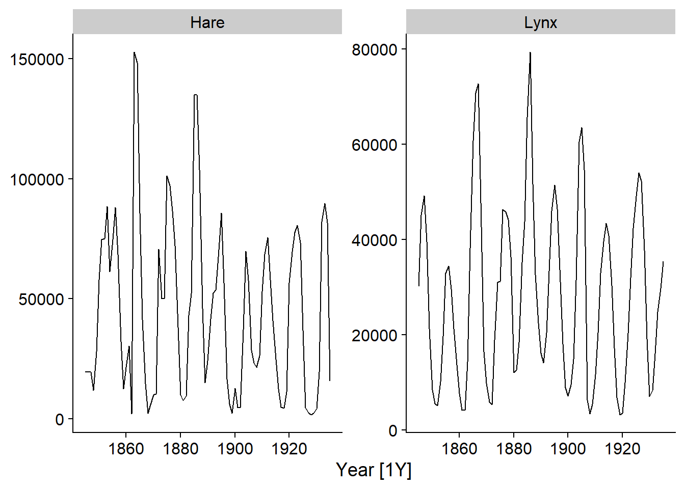
Notez que l’axe des \(x\) indique le temps entre chaque observation, soit [1Y] pour “1 year”.
Puisque la fonction autoplot produit un graphique de type ggplot, nous pouvons personnaliser celui-ci avec les options habituelles, ex.: personnaliser les titres des axes.
autoplot(pelt, vars(Hare, Lynx)) +
labs(x = "Année", y = "Fourrures échangées")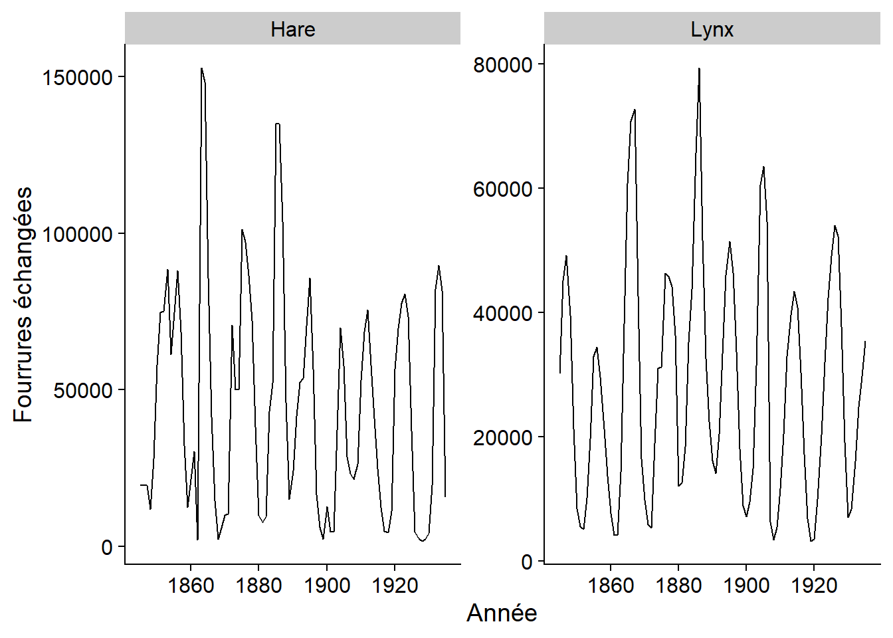
Le tableau sea_ice.txt` contient des données quotidiennes de la surface de glace dans l’océan Arctique entre 1972 et 2018.
Spreen, G., L. Kaleschke, and G.Heygster (2008), Sea ice remote sensing using AMSR-E 89 GHz channels J. Geophys. Res.,vol. 113, C02S03, doi:10.1029/2005JC003384.
Puisqu’il ne s’agit pas d’un fichier .csv (colonnes délimitées par des virgules), mais que les colonnes sont plutôt délimitées par des espaces, nous devons utiliser read.table. Il faut aussi spécifier manuellement les noms de colonnes qui sont absents du fichier.
ice <- read.table("../donnees/sea_ice.txt")
colnames(ice) <- c("year", "month", "day", "ice_km2")
head(ice)## year month day ice_km2
## 1 1972 1 1 14449000
## 2 1972 1 2 14541400
## 3 1972 1 3 14633900
## 4 1972 1 4 14716100
## 5 1972 1 5 14808500
## 6 1972 1 6 14890700Pour convertir les trois colonnes year, month et day en une date, nous utilisons la fonction make_date. Nous convertissons aussi la surface de glace en millions de km\(^2\) pour rendre les nombres plus faciles à lire. Nous enlevons les colonnes superflues et nous convertissons le résultat en tsibble avec la fonction as_tsibble, en précisant que la colonne date constitue l’index temporel.
ice <- mutate(ice, date = make_date(year, month, day),
ice_Mkm2 = ice_km2 / 1E6) %>%
select(-year, -month, -day, -ice_km2)
ice <- as_tsibble(ice, index = date)
head(ice)## # A tsibble: 6 x 2 [1D]
## date ice_Mkm2
## <date> <dbl>
## 1 1972-01-01 14.4
## 2 1972-01-02 14.5
## 3 1972-01-03 14.6
## 4 1972-01-04 14.7
## 5 1972-01-05 14.8
## 6 1972-01-06 14.9Notez l’indication [1D] (1 day) qui signifie que les données sont quotidiennes.
Les opérations du package dplyr s’appliquent aussi aux tsibble, avec quelques changements. Le plus important est l’ajout d’une fonction index_by, qui agit comme group_by mais permet de grouper les rangées par période temporelle. Cela est utile pour agréger les données à une plus grande échelle temporelle. Ici, nous groupons les dates par mois avec la fonction yearmonth puis nous calculons la surface de glace moyenne par mois.
ice <- index_by(ice, month = yearmonth(date)) %>%
summarize(ice_Mkm2 = mean(ice_Mkm2))
head(ice)## # A tsibble: 6 x 2 [1M]
## month ice_Mkm2
## <mth> <dbl>
## 1 1972 janv. 15.4
## 2 1972 févr. 16.3
## 3 1972 mars 16.2
## 4 1972 avr. 15.5
## 5 1972 mai 14.6
## 6 1972 juin 12.9Saisonnalité
La série des mesures de surface glacée montre une tendance générale à la baisse dû au réchauffement climatique, mais aussi un fort patron saisonnier (hausse à l’hiver, baisse à l’été).
autoplot(ice)## Plot variable not specified, automatically selected `.vars = ice_Mkm2`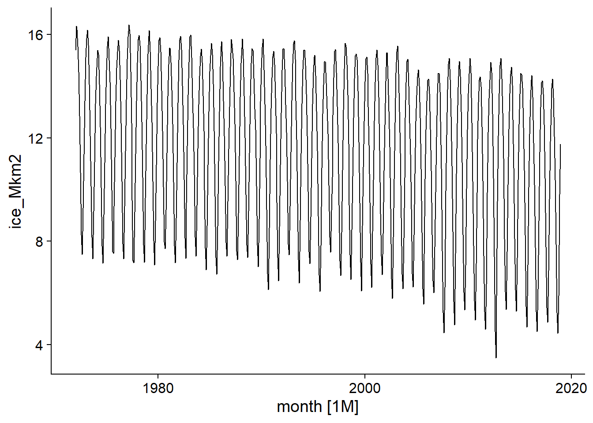
Dans l’analyse des séries temporelles, la saisonnalité désigne une variation se répétant à une période fixe et connue (ex.: semaine, mois, année).
Deux types de graphique nous permettent de visualiser les séries temporelles avec une composante saisonnière. D’abord, gg_season place chaque saison (ici, R choisit automatiquement les mois) sur l’axe des \(x\), puis superpose les différentes années avec un code de couleur. Notez qu’il n’est pas nécessaire de spécifier la variable à afficher, soit ice_Mkm2, car le tableau n’en contient qu’une seule.
gg_season(ice)## Plot variable not specified, automatically selected `y = ice_Mkm2`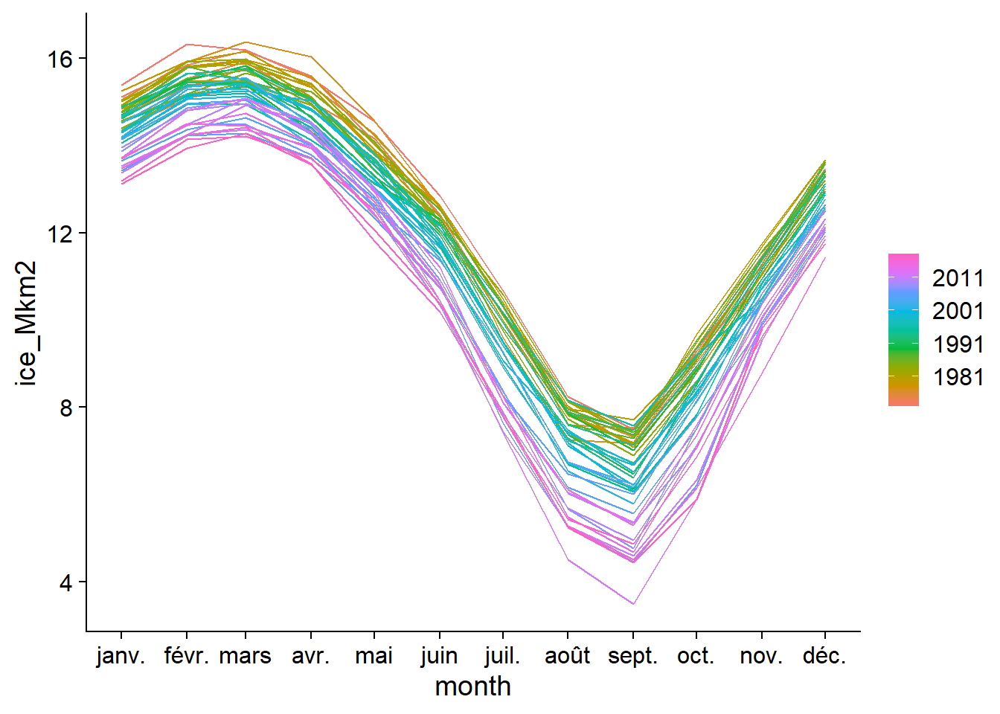
On voit bien ici la fluctuation annuelle avec un maximum en mars et un minimum en septembre, ainsi que la tendance à une surface de glace plus faible pour les années récentes.
Le graphique des sous-séries saisonnières (seasonal subseries) sépare quant à lui les données des différents mois pour montrer la tendance entre les données d’un même mois à travers le temps, ainsi que le niveau moyen pour ce mois (ligne horizontale bleue).
gg_subseries(ice)## Plot variable not specified, automatically selected `y = ice_Mkm2`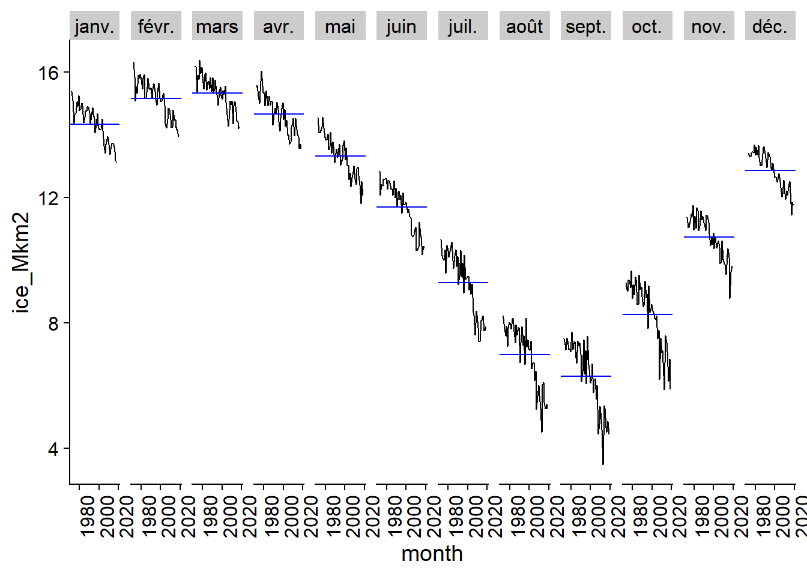
Comme leur nom le suggère, les graphiques gg_season et gg_subseries sont aussi de type ggplot.
Composantes d’une série temporelle
Nous pouvons maintenant présenter de façon plus formelle les différentes composantes d’une série temporelle.
Une tendance est un changement directionnel (positif ou négatif, mais pas nécessairement linéaire) de la série temporelle à long-terme.
La saisonnalité réfère aux fluctuations répétées avec une période fixe et connue, souvent associée au calendrier (annuelle, hebdomadaire, journalière, etc.)
Un cycle, dans le contexte des séries temporelles, réfère à des fluctuations qui se répètent, mais pas selon une période fixée par un élément du calendrier. Par exemple, les fluctuations des populations du lynx et du lièvre dans l’exemple précédent n’ont pas une amplitude ou une fréqunce tout à fait régulière. Les cycles économiques (périodes de croissance et de récession) sont un autre exemple de comportement cyclique généré par la dynamique d’un système. Ces cycles sont généralement à une échelle de plusieurs années et ne sont pas aussi prévisibles que les fluctuations saisonnières.
Finalement, une fois que les tendances, cycles et variations saisonnières ont été soustraites d’un série temporelle, il reste un résidu aussi nommé bruit.
Différents modèles existent pour extraire ces composantes d’une série temporelle donnée. Le chapitre 3 du manuel de Hyndman et Athanasopoulos présente ces modèles plus en détail, mais nous ne montrerons ici qu’un bref exemple.
Le code R ci-dessous applique un modèle à la série ice, avec la méthode de décomposition STL. Ensuite, la fonction components extrait les composantes du résultat, puis autoplot les affiche dans un graphique.
decomp <- model(ice, STL())## Model not specified, defaulting to automatic modelling of the `ice_Mkm2` variable. Override this using the model formula.autoplot(components(decomp))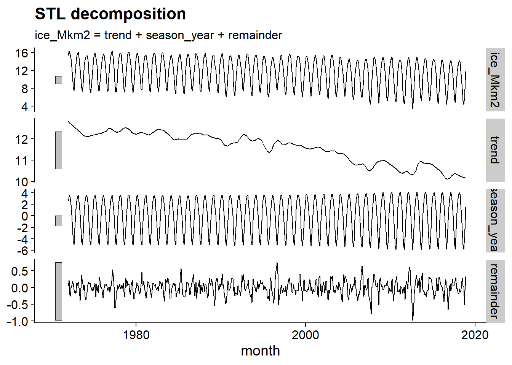
Ce graphique nous permet de visualiser la tendance générale à la baisse, la variation saisonnière dont l’amplitude augmente légèrement avec le temps, puis le résidu, dont l’amplitude est moins élevé et la fréquence est très rapide, ressemblant à du bruit aléatoire. Notez que les barres grises à gauche de chaque série ont la même échelle, ce qui aide à mettre en perspective l’importance de chaque composante.
Autocorrélation
Le dernier concept donc nous discuterons dans cette partie est celui d’autocorrélation. Pour une série temporelle \(y\), il s’agit de la corrélation entre \(y_t\) et \(y_{t-k}\) mesurée pour un délai (lag) \(k\), donc la corrélation entre chaque mesure \(y\) et la mesure prise à \(k\) intervalles précédents.
La fonction ACF, appliquée à un tsibble, calcule cette autocorrélation pour différentes valeurs du délai \(k\), qui peuvent ensuite être visualisées avec autoplot.
head(ACF(ice))## Response variable not specified, automatically selected `var = ice_Mkm2`## # A tsibble: 6 x 2 [1M]
## lag acf
## <lag> <dbl>
## 1 1M 0.857
## 2 2M 0.491
## 3 3M 0.0263
## 4 4M -0.411
## 5 5M -0.718
## 6 6M -0.829autoplot(ACF(ice))## Response variable not specified, automatically selected `var = ice_Mkm2`
Pour notre jeu de données ice, nous voyons une autocorrélation positive forte pour un délai d’un mois, qui diminue et atteint une valeur négative maximale à 6 mois, puis continue ce cycle aux 12 mois. Cela représente bien sûr la variation saisonnière, avec des tendances opposées aux 6 mois (été-hiver, printemps-automne) et une corrélation maximale pour les données du même mois lors d’années successives. Les tirets bleus représentent le seuil de significativité pour les valeurs d’autocorrélation.
Si on avait un processus sans autocorrélation réelle, on s’attend donc à ce qu’aucune des valeurs ne franchisse cette ligne. Cependant, puisqu’il s’agit d’un intervalle à 95%, 5% des valeurs seront significatives par hasard, donc le dépassement occasionnel de la ligne (surtout pour des délais élevés) ne devrait pas être nécessairement interprété comme une autocorrélation réelle.
Voici la fonction d’autocorrélation pour la série temporelle des fourrures de lynx.
autoplot(ACF(pelt, Lynx))
Ici, nous voyons encore un comportement cyclique se répétant environ aux 10 ans. Cependant, puisque ces cycles ne sont pas tout à fait constants, l’autocorrélation diminue légèrement pour chaque cycle subséquent.
Modèles ARIMA pour les séries temporelles
Cette partie présente la théorie des modèles ARIMA, une classe de modèles utilisés pour représenter les séries temporelles.
Nous définissons d’abord le concept de stationnarité, qui est une condition nécessaire pour représenter une série temporelle avec un modèle ARIMA.
Stationnarité
Une série temporelle est stationnaire si ses propriétés statistiques ne dépendent pas de la valeur absolue de la variable temporelle \(t\). Autrement dit, ces propriétés ne sont pas affectées par une translation quelconque de la série dans le temps.
Par exemple, une série avec une tendance n’est pas stationnaire, car la moyenne de \(y_t\) varie selon \(t\).
Une série avec une composante saisonnière n’est pas non plus stationnaire. Prenons notre exemple de la surface glacée en Arctique en fonction du temps, avec un maximum à la fin de l’hiver et un minimum à la fin de l’été. Une translation de six mois inverserait ce minimum et maximum et ne représenterait plus le même phénomène.
Cependant, une série avec un cycle non-saisonnier peut être stationnaire.

Dans l’exemple des fourrures de lièvre échangées par la Compagnie de la Baie d’Hudson, les cycles que nous observons sont dus à la dynamique des populations de l’animal et ne sont pas liés à un point dans le temps; par exemple, il n’y a aucune raison particulière pour laquelle un minimum se produit autour de l’année 1900 et une translation de la série de quelques années ne changerait pas notre modèle du phénomène.
Il est important de noter que la non-stationnarité peut être due à une tendance stochastique (aléatoire) plutôt qu’à un effet systématique.
Par exemple, prenons le modèle d’une marche aléatoire, où chaque valeur \(y_t\) est obtenue en ajoutant une valeur aléatoire normalement distribuée à la valeur précédente \(y_{t-1}\):
\[y_t = y_{t-1} + \epsilon_t\]
\[\epsilon_t \sim \text{N}(0, \sigma)\]
Voici trois réalisations de ce modèle:
## Plot variable not specified, automatically selected `.vars = y`
Il est clair que chacune des trois séries temporelles s’éloigne progressivement de 0, donc ce processus n’est pas stationnaire.
Différenciation
La marche aléatoire représentée ci-dessus ne produit pas des séries stationnaires. Toutefois, la différence entre deux valeurs consécutives (notée \(y_t'\)) d’une marche aléatoire est stationnaire, car il s’agit simplement de la variable normalement distribuée \(\epsilon_t\).
\[y_t - y_{t-1} = y_t' = \epsilon_t\]
En fait, puisque tous les \(\epsilon_t\) sont distribués de même façon et non-corrélés dans le temps, il s’agit d’un “bruit blanc”.
## `mutate_if()` ignored the following grouping variables:
## Column `serie`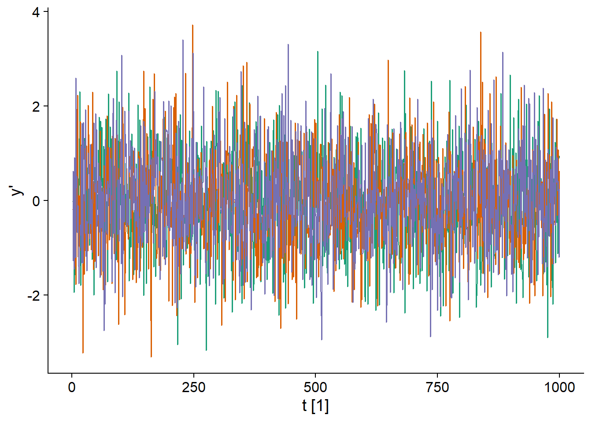
La différenciation est une méthode générale pour éliminer une tendance d’une série temporelle. La différence d’ordre 1:
\[y_t' = y_t - y_{t-1}\]
est généralement suffisante pour atteindre un état stationnaire, mais on doit parfois aller à l’ordre 2:
\[y_t'' = (y_t - y_{t-1}) - (y_{t-1} - y_{t-2})\]
qui représente la “différence des différences”.
Nous discuterons peu des modèles saisonniers dans ce cours, mais il est utile de noter que la saisonnalité d’une série temporelle peut être éliminée en remplaçant \(y_t\) par sa différence entre valeurs consécutives de la même saison, par exemple \(y_t' = y_t - y_{t-12}\) pour des données mensuelles. Dans ce cas \(y_t'\) représente la différence entre la valeur de \(y\) entre janvier et janvier précédent, février et février précédent, etc.
Modèle de moyenne mobile
Les modèles de moyenne mobile (moving average) sont un sous-ensemble des modèles ARIMA. Considérons un bruit blanc \(\epsilon_t\) et une variable \(y_t\) qui dépend de la valeur de ce bruit blanc pour différentes périodes successives, par exemple:
\[y_t = \epsilon_t + 0.6 \epsilon_{t-1} + 0.4 \epsilon_{t-2}\]
\[\epsilon_t \sim \text{N}(0, 1)\]
Dans ce cas, la valeur de \(y_t\) est donnée par \(\epsilon_t\) auquel on ajoute une partie des deux valeurs précédentes de \(\epsilon\), cette partie est déterminée par les coefficients 0.6 et 0.4. Le graphique ci-dessous illustre une série générée par ce modèle.
–
## Plot variable not specified, automatically selected `.vars = y`
Plus généralement, un modèle de moyenne mobile d’ordre \(q\), MA(q), est représenté par l’équation:
\[y_t = \epsilon_t + \theta_1 \epsilon_{t-1} + ... + \theta_q \epsilon_{t-q}\]
Ici, \(y\) est la moyenne pondérée des \(q+1\) dernières valeurs d’un bruit blanc. Concrètement, cela signifie que la valeur de \(y\) dépend de “chocs” aléatoire \(\epsilon_t\), dont l’effet est ressenti pour \(q\) périodes de temps avant de disparaître au temps \(t+q+1\). Pour ce modèle, l’autocorrélation devient nulle pour des délais \(>q\).
Voici le graphique d’autocorrélation pour notre exemple de modèle MA(2): \(y_t = \epsilon_t + 0.6 \epsilon_{t-1} + 0.4 \epsilon_{t-2}\).
## Response variable not specified, automatically selected `var = y`
Modèle autorégressif
Les modèles autorégressifs (AR) sont un autre sous-ensemble des modèles ARIMA. Comme le nom le suggère, il s’agit d’une régression entre la valeur actuelle et les valeurs précédentes de \(y_t\). Par exemple, voici le graphique du modèle:
\[y_t = 0.6 y_{t-1} + \epsilon_t\]
## Plot variable not specified, automatically selected `.vars = y`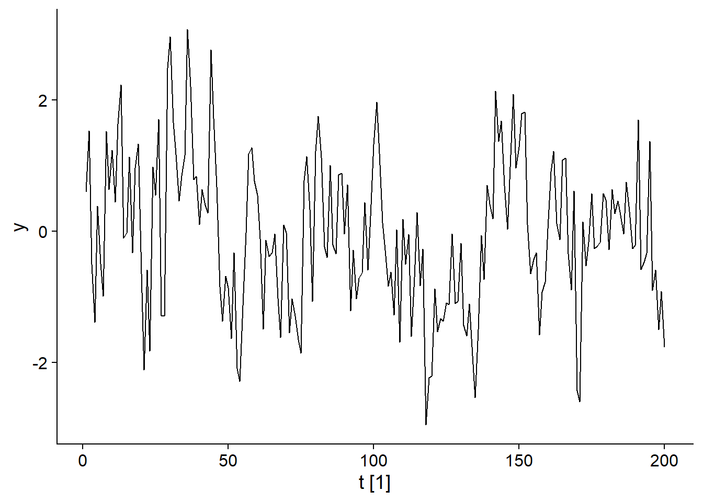
Plus généralement, dans un modèle AR(p), \(y_t\) dépend des \(p\) dernières valeurs de \(y\):
\[y_t = \phi_1 y_{t-1} + ... + \phi_p y_{t-p} + \epsilon_t\]
Certaines conditions doivent être respectées par les coefficients \(\phi\) pour obtenir une série stationnaire. Par exemple, pour un modèle AR(1), \(\phi_1\) doit être inférieur à 1, car \(\phi_1 = 1\) produirait la marche aléatoire vue plus haut.
Notons que l’autocorrélation des \(y_t\) dans un modèle AR(p) s’étend au-delà du délai \(p\). Par exemple, pour AR(1), \(y_t\) dépend de \(y_{t-1}\), mais \(y_{t-1}\) dépend de \(y_{t-2}\), donc \(y_t\) dépend indirectement de \(y_{t-2}\) et ainsi de suite. Cependant, cette dépendance indirecte s’atténue avec le temps.
Voici par exemple la fonction d’autocorrélation pour notre modèle AR(1):
\[y_t = 0.6 y_{t-1} + \epsilon_t\]
## Response variable not specified, automatically selected `var = y`
Autocorrélation partielle
L’autocorrélation partielle est définie comme la corrélation entre \(y_t\) et \(y_{t-k}\) qui demeure après avoir tenu compte des corrélations pour tous les délais inférieurs à \(k\). Dans R, celle-ci est obtenue par la fonction PACF plutôt que ACF.
Pour un modèle AR(1), nous voyons que si l’ACF diminue progressivement avec \(k\), la PACF devient non-significative pour \(k > 1\), car les corrélations subséquentes étaient toutes des effets indirects de la corrélation à un délai 1.
plot_grid(autoplot(ACF(ar1_sim)), autoplot(PACF(ar1_sim)))## Response variable not specified, automatically selected `var = y`
## Response variable not specified, automatically selected `var = y`
Modèle ARIMA
Un modèle ARIMA (autoregressive integrated moving average model) d’ordre (p,d,q) combine un modèle autorégressif d’ordre \(p\) et une moyenne mobile d’ordre \(q\) sur la variable \(y\) différenciée \(d\) fois.
Par exemple, voici un modèle ARIMA(1,1,2):
\[y'_t = c + \phi_1 y'_{t-1} + \epsilon_t + \theta_1 \epsilon_{t-1} + \theta_2 \epsilon_{t-2}\]
La variable réponse \(y_t'\) (différence entre les valeurs successives de \(y_t\)) est donnée par une constante \(c\) (niveau moyen de la série) auquelle on additionne un terme autorégressif, un terme de bruit \(\epsilon_t\) et deux termes de la moyenne mobile en fonction des \(\epsilon_t\) précédents.
Il existe aussi des modèles ARIMA avec des composantes représentant la saisonnalité, donc des termes basés sur des délais représentant la période entre deux saisons (ex.: délai de 12 pour des données mensuelles). Nous ne verrons pas ces modèles dans ce cours, mais vous pouvez consulter le manuel de Hyndman et Athanasopoulos en référence pour ce sujet.
Régression avec résidus corrélés
Il est courant de vouloir représenter \(y_t\) non seulement en fonction de ses valeurs précédentes, mais aussi de prédicteurs externes \(x_t\) qui sont aussi mesurées à chaque période temporelle. Par exemple, voici l’équation d’un modèle linéaire simple:
\[y_t = \beta_0 + \beta_1 x_{t} + \eta_t\]
Ici, nous représentons le résidu par \(\eta_t\) plutôt que \(\epsilon_t\); ce résidu n’est pas une variable aléatoire indépendante, mais comporte des corrélations dans le temps. Alors, on peut représenter \(\eta_t\), soit la portion de \(y_t\) non-expliquée par les prédicteurs \(x_t\), par un modèle ARIMA.
Notez finalement que selon le phénomène à modéliser, il peut être utile de différencier les valeurs de \(y\) et \(x\) (donc la régression explique les différences de \(y\) en fonction des différences de \(x\)). Dans d’autres cas, nous pourrions aussi modéliser \(y_t\) non seulement en fonction de \(x_t\), mais aussi de valeurs précédentes de \(x\), si l’effet de \(x\) sur \(y\) se produit avec un délai.
Exemple 1: Fourrures de lynx échangées à la CBH
Nous allons d’abord appliquer un modèle ARIMA à la série temporelle des fourrures de lynx échangées à la Compagnie de la Baie d’Hudson. Pour simplifier la lecture des nombres, la variable réponse sera mesurée en milliers de fourrures.
pelt <- mutate(pelt, Lynx = Lynx / 1000)
autoplot(pelt, Lynx)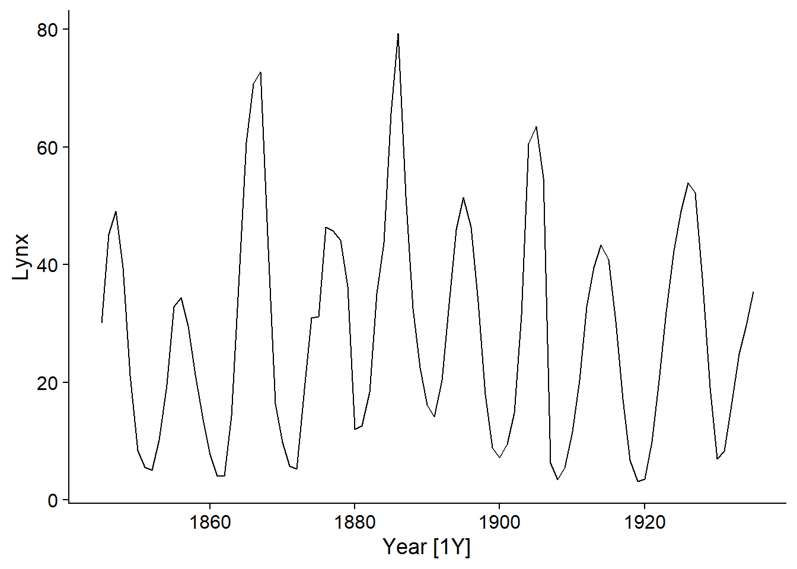
Choix du modèle ARIMA
Nous devons d’abord choisir les ordres \(p\), \(d\) et \(q\) de notre modèle. Nous commençons par vérifier si la série doit être différenciée pour obtenir une série stationnaire.
La fonction unitroot_ndiffs effectue un test statistique pour déterminer le nombre minimum de différenciations à réaliser.
unitroot_ndiffs(pelt$Lynx)## ndiffs
## 0Ici, le résultat est 0 donc aucune différenciation n’est nécessaire (\(d = 0\)).
Pour une série temporelle contenant seulement une composante AR ou MA, l’ordre (\(p\) ou \(q\)) peut être déterminé en consultant les graphiques d’autocorrélation.
Si les données suivent un modèle autorégressif d’ordre \(p\), l’autocorrélation partielle (PACF) devient non-significative pour des délais \(>p\).
Si les données suivent un modèle de moyenne mobile d’ordre \(q\), l’autocorrélation (ACF) devient non-significative pour des délais \(>q\).
Pour un modèle combinant AR et MA, il est toutefois difficile de déduire \(p\) et \(q\) graphiquement.
Voici les graphiques de l’ACF et de la PACF pour les fourrures de lynx:
plot_grid(autoplot(ACF(pelt, Lynx)), autoplot(PACF(pelt, Lynx)))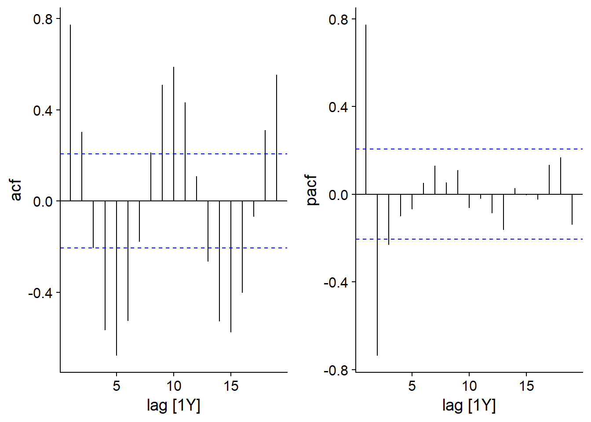
Le graphique d’autocorrélation partielle montre des pics importants à un délai de 1 (corrélation positive) et 2 (négative), donc un modèle AR(2) pourrait suffire ici.
Ajuster un modèle ARIMA
La fonction model du package fable permet d’ajuster différents modèles de séries temporelles. Ce package (dont le nom est la contraction de forecast table) a été automatiquement chargé avec fpp3.
lynx_ar2 <- model(pelt, ARIMA(Lynx ~ pdq(2,0,0)))Dans le code ci-dessus, nous indiquons vouloir modéliser les données contenues dans pelt et plus précisément appliquer un modèle ARIMA pour la variable Lynx. Le terme ARIMA(Lynx ~ pdq(2,0,0)) spécifie un modèle AR(2) \((p = 2, d = 0, q = 0)\).
Notez que la fonction ARIMA estime les coefficients du modèle par la méthode du maximum de vraisemblance.
Pour voir le sommaire du modèle, nous n’utilisons pas summary, mais plutôt report.
report(lynx_ar2)## Series: Lynx
## Model: ARIMA(2,0,0) w/ mean
##
## Coefficients:
## ar1 ar2 constant
## 1.3446 -0.7393 11.0927
## s.e. 0.0687 0.0681 0.8307
##
## sigma^2 estimated as 64.44: log likelihood=-318.39
## AIC=644.77 AICc=645.24 BIC=654.81Le tableau des coefficients montre chacun des deux termes d’autorégression (\(\phi_1\) et \(\phi_2\)) ainsi que la constante \(c\) représentant le niveau moyen de \(y\). Chacun des coefficients a son erreur-type (s.e.) sur la ligne inférieure. Finalement, sigma^2 indique la variance des résidus \(\epsilon_t\) et la dernière ligne montre la valeur de l’AIC et de l’AICc (le BIC est un autre critère que nous ne voyons pas dans ce cours-ci).
Sélection automatique du modèle
Si nous appelons la fonction ARIMA sans spécifier pdq(...), la fonction choisira automatiquement un modèle ARIMA.
lynx_arima <- model(pelt, ARIMA(Lynx))D’abord, ARIMA effectue le même test unitroot_ndiffs pour déterminer le nombre de différenciations \(d\), puis choisit les valeurs de \(p\) et \(q\) minimisant l’AIC par une méthode séquentielle (stepwise). Comme nous avons vu dans le cours préalable, les méthodes séquentielles ne trouvent pas toujours le meilleur modèle. Toutefois, dans le cas des modèles ARIMA il est rare que les données réelles requièrent des ordres \(p\) et \(q\) supérieurs à 3, donc un modèle simple est généralement suffisant.
report(lynx_arima)## Series: Lynx
## Model: ARIMA(2,0,1) w/ mean
##
## Coefficients:
## ar1 ar2 ma1 constant
## 1.4851 -0.8468 -0.3392 10.1657
## s.e. 0.0652 0.0571 0.1185 0.5352
##
## sigma^2 estimated as 60.92: log likelihood=-315.39
## AIC=640.77 AICc=641.48 BIC=653.33Nous voyons ici que le modèle optimal choisi inclut non seulement une autorégression d’ordre 2, mais aussi une moyenne mobile d’ordre 1. La valeur de l’AIC montre une petite amélioration (diminution de l’AIC de ~4) par rapport au modèle AR(2).
Graphiques de diagnostic
La fonction gg_tsresiduals permet de vérifier que les résidus de l’ARIMA respectent les suppositions du modèle, notamment qu’ils soient distribués de façon normale et ne comportent aucune autocorrélation, ce qui semble être le cas ici (d’après le graphique d’autocorrélation et l’histogramme des résidus de la rangée inférieure).
gg_tsresiduals(lynx_arima)
En outre, nous pouvons ajouter les valeurs attendues du modèle (fitted) au graphique de la série temporelle en utilisant la fonction autolayer:
autoplot(pelt, Lynx) +
autolayer(fitted(lynx_arima), linetype = "dashed")## Plot variable not specified, automatically selected `.vars = .fitted`
Prévisions
Les modèles de séries temporelles servent souvent à faire des prévisions (forecast) qui constituent des prédictions sur les valeurs futures de la variable. Ici, nous appliquons la fonction forecast au modèle lynx_arima, en spécifiant d’effectuer les prévisions des 10 prochains points dans le temps (h = 10).
prev_lynx <- forecast(lynx_arima, h = 10)
head(prev_lynx)## # A fable: 6 x 4 [1Y]
## # Key: .model [1]
## .model Year Lynx .distribution
## <chr> <dbl> <dbl> <dist>
## 1 ARIMA(Lynx) 1936 37.4 N(37, 61)
## 2 ARIMA(Lynx) 1937 35.7 N(36, 141)
## 3 ARIMA(Lynx) 1938 31.5 N(32, 185)
## 4 ARIMA(Lynx) 1939 26.7 N(27, 191)
## 5 ARIMA(Lynx) 1940 23.2 N(23, 196)
## 6 ARIMA(Lynx) 1941 22.0 N(22, 223)Le tableau produit par forecast contient des colonnes pour l’année (débutant en 1936, puisque les observations se terminent en 1935), la valeur prédite de la variable Lynx ainsi qu’un distribution de cette prédiction: N signifie une distribution normale avec deux paramètres données par la moyenne et la variance (celle-ci est utilisée ici plutôt que l’écart-type). Cette distribution sera utilisée pour tracer des intervalles de prédiction. Notez que la variance augmente plus on s’éloigne dans le temps.
Les prévisions peuvent être visualisées avec autoplot. L’ajout de pelt comme deuxième argument permet de représenter les valeurs observées et prévues sur le même graphique, tandis que level spécifie le niveau (en %) des intervalles de prédiction à afficher.
autoplot(prev_lynx, pelt, level = c(50, 95))
On voit bien sur ce graphique que l’incertitude des prévisions augmente plus on s’éloigne des observations. Cela est dû au fait que la valeur au temps \(t\) dépendent des valeurs au temps précédent, donc l’incertitude s’accumule avec le temps.
Exemple 2: Demande d’électricité de l’état du Victoria
Le prochain exemple illustre l’utilisation d’un modèle ARIMA avec des prédicteurs externes. Nous utiliserons le jeu de données vic_elec inclus avec le package fpp3, qui représente la demande d’électricité (en MW) enregistrée aux demi-heures dans l’état australien du Victoria.
data(vic_elec)
head(vic_elec)## # A tsibble: 6 x 5 [30m] <Australia/Melbourne>
## Time Demand Temperature Date Holiday
## <dttm> <dbl> <dbl> <date> <lgl>
## 1 2012-01-01 00:00:00 4383. 21.4 2012-01-01 TRUE
## 2 2012-01-01 00:30:00 4263. 21.0 2012-01-01 TRUE
## 3 2012-01-01 01:00:00 4049. 20.7 2012-01-01 TRUE
## 4 2012-01-01 01:30:00 3878. 20.6 2012-01-01 TRUE
## 5 2012-01-01 02:00:00 4036. 20.4 2012-01-01 TRUE
## 6 2012-01-01 02:30:00 3866. 20.2 2012-01-01 TRUELes autres colonnes indiquent la température au même moment, la date ainsi qu’une variable binaire Holiday indiquant si cette date est un jour férié.
Pour travailler avec des données à plus grande échelle (quotidienne plutôt qu’aux demi-heures, nous effectuons une agrégation des mesures par date avec index_by. Nous calculons la demande totale et la température moyenne par jour, le statut de jour férié (any(Holiday) signifie qu’il existe au moins une valeur TRUE dans le groupe, mais en réalité cette variable est constante durant une date donnée).
vic_elec <- index_by(vic_elec, Date) %>%
summarize(Demand = sum(Demand), Tmean = mean(Temperature),
Holiday = any(Holiday)) %>%
mutate(Workday = (!Holiday) & (wday(Date) %in% 2:6))Nous avons aussi créé une variable Workday (jour ouvrable) qui identifie les jours non-fériés entre le lundi et le vendredi; wday est une fonction qui indique le jour de la semaine entre dimanche (1) et samedi (7).
Finalement, nous convertissons la demande en GW pour que les chiffres soient plus faciles à lire.
vic_elec <- mutate(vic_elec, Demand = Demand / 1000)En représentant la demande en fonction de la température moyenne et du statut de jour ouvrable, nous voyons qu’elle suit une fonction à peu près quadratique de la température (minimum autour de 18 degrés C et augmentation pour les températures plus froides et plus chaudes) et qu’il y a une diminution presque constante pour les jours fériés et fins de semaine.
ggplot(vic_elec, aes(x = Tmean, y = Demand, color = Workday)) +
geom_point() +
scale_color_brewer(palette = "Dark2")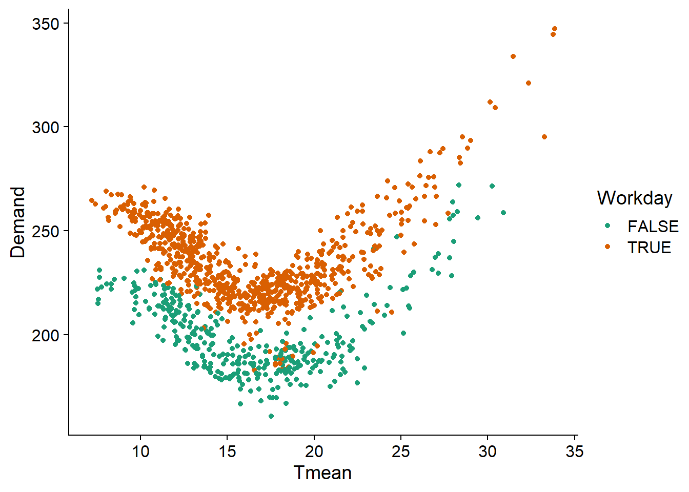
Nous appliquons donc à ces données un modèle linéaire incluant un terme quadratique pour la température (il est nécessaire d’utiliser I() pour entourer le terme Tmean^2 dans R) et un effet additif de Workday. Comme nous pouvons voir, ce modèle décrit bien le patron observé.
elec_lm <- lm(Demand ~ Tmean + I(Tmean^2) + Workday, vic_elec)
ggplot(vic_elec, aes(x = Tmean, y = Demand, color = Workday)) +
geom_point(alpha = 0.3) +
geom_line(aes(y = fitted(elec_lm))) +
scale_color_brewer(palette = "Dark2")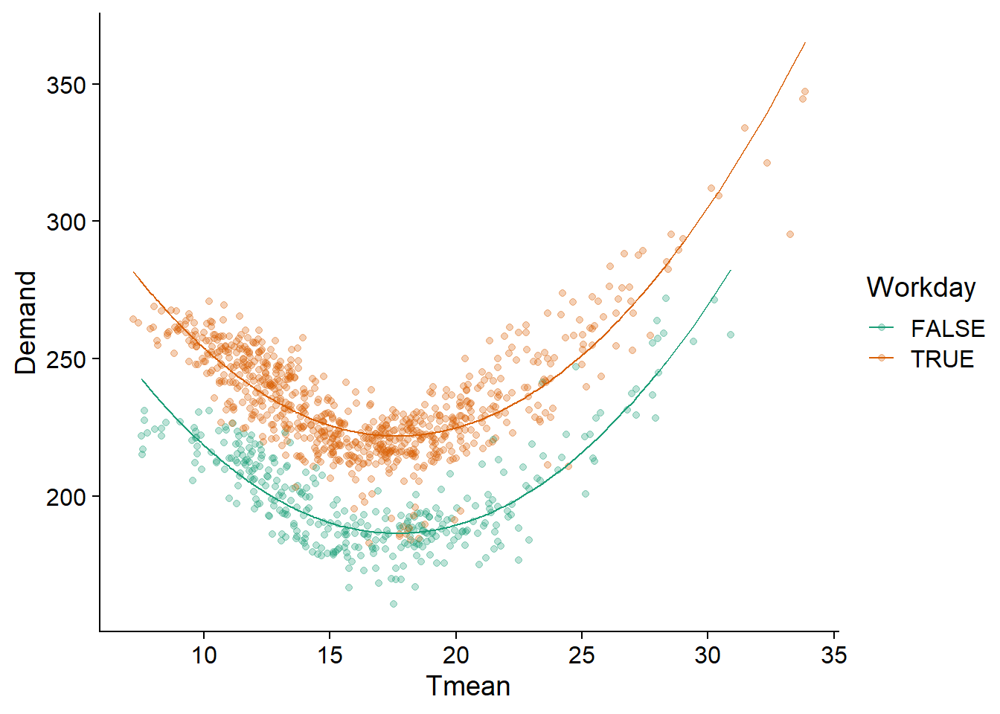
Cependant, en visualisant les résidus du modèle en fonction de la date, nous voyons qu’une corrélation temporelle persiste. Il serait donc utile de représenter ces résidus par un modèle ARIMA.
ggplot(vic_elec, aes(x = Date, y = residuals(elec_lm), color = Workday)) +
geom_point() +
scale_color_brewer(palette = "Dark2")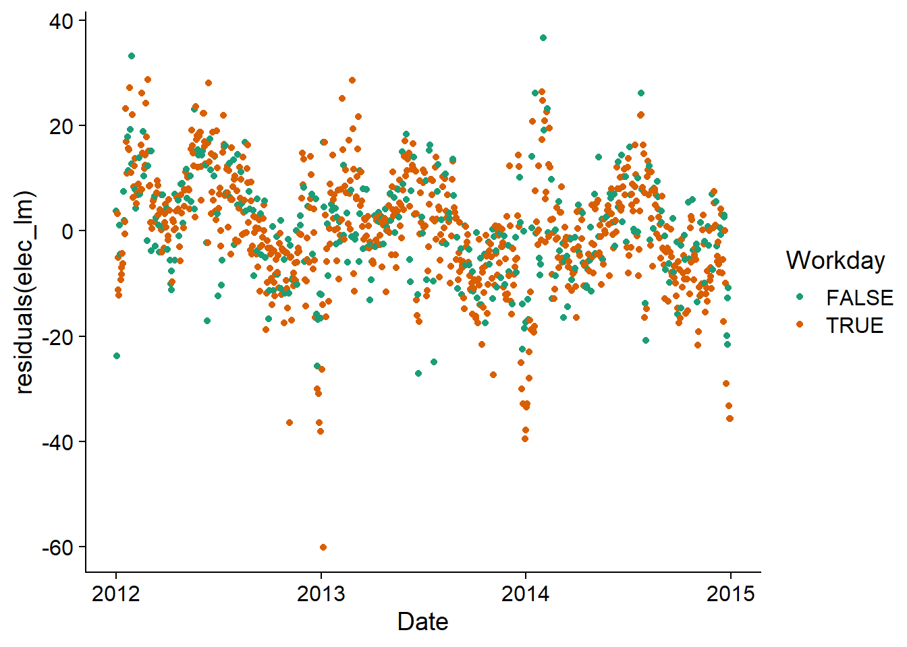
Dans le modèle ARIMA(), nous spécifions la formule reliant la réponse aux prédicteurs comme dans un lm, puis nous ajoutons les termes d’ARIMA s’il y a lieu (sinon la fonction choisit le modèle automatiquement, tel que vu plus tôt).
elec_arima <- model(vic_elec, ARIMA(Demand ~ Tmean + I(Tmean^2) + Workday + PDQ(0,0,0)))Ici, notez que PDQ(0,0,0) spécifie qu’il n’y a pas de composante saisonnière, car la méthode de sélection automatique choisirait un modèle avec saisonnalité ici, un type de modèle que nous ne couvrons pas dans ce cours.
Il ne faut pas confondre cette fonction avec pdq (en minuscules), qui spécifie l’ordre du modèle ARIMA de base.
Le modèle choisi comporte une différence d’ordre 1, donc on modélise la différence de demande en fonction de la différence de température. Il comporte aussi 1 terme d’autorégression et 4 termes de moyenne mobile.
report(elec_arima)## Series: Demand
## Model: LM w/ ARIMA(1,1,4) errors
##
## Coefficients:
## ar1 ma1 ma2 ma3 ma4 Tmean I(Tmean^2)
## -0.7906 0.3727 -0.4266 -0.1977 -0.1488 -11.9062 0.3692
## s.e. 0.0941 0.0989 0.0481 0.0407 0.0284 0.3775 0.0096
## WorkdayTRUE
## 32.7278
## s.e. 0.4453
##
## sigma^2 estimated as 46.14: log likelihood=-3647.85
## AIC=7313.7 AICc=7313.87 BIC=7358.69Les résidus semblent proches de la normale, mais il reste une autocorrélation significative. Notamment, l’autocorrélation positive à 7, 14, 21 et 28 jours suggère qu’il y a un patron hebdomadaire non pris en compte par la distinction entre jours ouvrables et de congé.
gg_tsresiduals(elec_arima)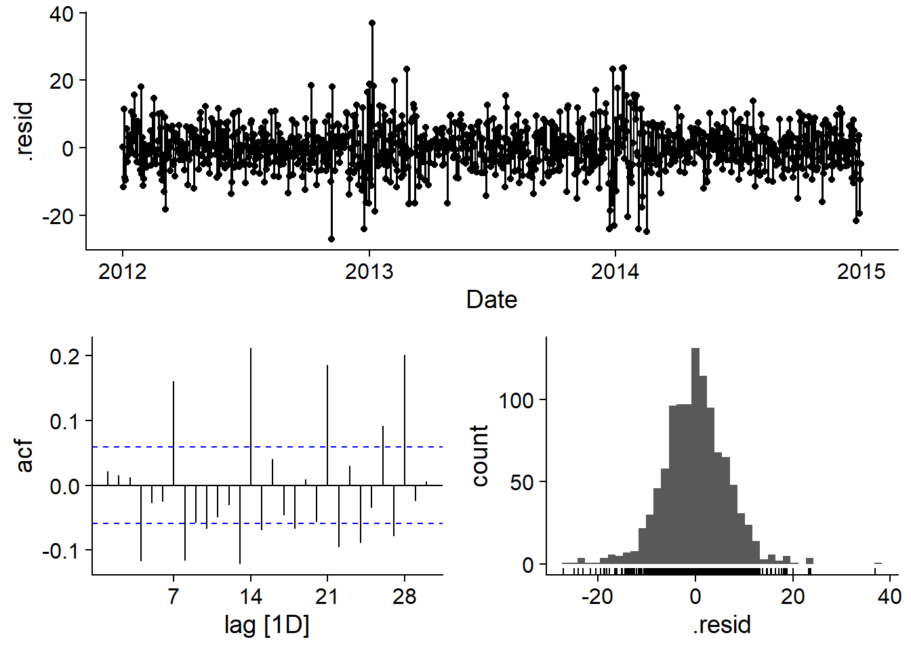
Prévisions
Lorsqu’un modèle comporte des prédicteurs externes, il faut spécifier la valeur de ces prédicteurs pour les nouvelles périodes de temps afin de pouvoir faire des prévisions.
Nous utilisons la fonction new_data(vic_elec, 14) pour créer un jeu de données contenant les 14 dates suivant la série présente dans vic_elec (donc à partir du 1er janvier 2015), puis nous ajoutons des valeurs pour les prédicteurs Tmean et Workday. Pour simplifier ici, la température prévue est constante.
prev_df <- new_data(vic_elec, 14) %>%
mutate(Tmean = 20, Workday = TRUE)
head(prev_df)## # A tsibble: 6 x 3 [1D]
## Date Tmean Workday
## <date> <dbl> <lgl>
## 1 2015-01-01 20 TRUE
## 2 2015-01-02 20 TRUE
## 3 2015-01-03 20 TRUE
## 4 2015-01-04 20 TRUE
## 5 2015-01-05 20 TRUE
## 6 2015-01-06 20 TRUEEnsuite, nous indiquons ce jeu de données comme new_data dans la fonction forecast. Les données et prévisions sont illustrées avec autoplot; l’ajout de coord_cartesian permet de faire un zoom sur la fin de la série pour mieux voir les prévisions.
prev_elec <- forecast(elec_arima, new_data = prev_df)
autoplot(prev_elec, vic_elec) +
coord_cartesian(xlim = c(as_date("2014-11-01"), as_date("2015-01-15")))
Résumé des fonctions R
Voici les principales fonctions R présentées dans ce cours, qui proviennent des packages chargés avec fpp3.
as_tsibble(..., index = ...): Convertir undata.frameentsibble, en spécifiant la colonne temporelle avecindex.index_by: Grouper untsibbleen vue d’une agrégation temporelle.ACFetPACF: fonctions pour calculer l’autocorrélation et l’autocorrélation partielle à partir d’untsibble.model: Créer un modèle de série temporelle, à partir d’un jeu de données et d’une fonction de modélisation spécifique, commeARIMA.ARIMA(y ~ x + pdq(...) + PDQ(...)): Définit un modèle pour \(y\) en fonction de prédicteurs externes \(x\). On peut spécifier l’ordre de l’ARIMA avecpdqou de l’ARIMA saisonnier avecPDQ, sinon la fonction choisit automatiquement l’ordre du modèle pour minimiser l’AIC.forecast(mod, h = ...)ouforecast(mod, new_data = ...): Produit des prévisions du modèlemodpour leshprochaines périodes de temps, ou pour un jeu de données de prévisions défini dansnew_data.autoplot: Produit un graphique ggplot2 adapté selon l’objet donné (ex.: série temporelle pour untsibble, graphique de corrélation pour ACF ou PACF, graphique de prévision pour le résultat deforecast).gg_seasonetgg_subseries: Graphiques pour illustrer la saisonnalité d’une série temporelle.gg_tsresiduals: Graphiques de diagnostic pour les résidus d’un modèle de série temporelle.
Modèles additifs et bayésiens avec corrélations temporelles
Séries temporelles multiples
Dans les exemples précédents, toutes les données provenaient de la même série temporelle. Toutefois, il est fréquent de vouloir ajuster le même modèle (avec les mêmes paramètres) à plusieurs séries temporelles indépendantes. Par exemple, nous pourrions ajuster un modèle de croissance commun pour plusieurs arbres d’une même espèce, ou un modèle pour l’abondance d’une même espèce sur plusieurs sites.
Notez qu’un tableau de données temporel (tsibble) peut contenir plusieurs séries temporelles, mais dans ce cas, l’ajustement d’un modèle ARIMA à ce tableau est effectué séparément pour chaque série, avec des paramètres différents pour chacune.
Intégration des corrélations temporelles à d’autres modèles
Dans cette partie, nous verrons comment ajouter une corrélation temporelle de type ARMA aux résidus d’un GAM (avec mgcv) ou d’un modèle hiérarchique bayésien (avec brms).
Il s’agit donc de modèles sans différenciation des variables (il manque le “I” dans ARIMA), mais de toute façon les résidus devraient être stationnaires et toute tendance devrait être incluse dans le modèle principal.
Dans cette approche, nous ne pourrons pas non plus effectuer une sélection automatique de \(p\) et \(q\). Donc il faut choisir ces paramètres manuellement, soit selon nos connaissances théoriques, soit par une exploration de l’ACF et de la PACF, soit en comparant l’AIC de plusieurs modèles.
Exemple: Séries dendrochronologiques
Nous utilisons pour cet exemple le jeu de données wa082 du package d’analyse dendrochronologique dplr, qui présente les séries de croissance en surface terrière (basées sur la largeur des cernes) pour 23 individus de l’espèce Abies amabilis. Ce jeu de données a déjà été utilisé pour le laboratoire sur les modèles additifs généralisés.
Comme dans ce laboratoire, nous devons d’abord réarranger le jeu de données pour obtenir des colonnes représentant la croissance en surface terrière (cst), la surface terrière cumulative (st) et de l’âge pour chaque arbre à chaque année.
library(tidyr)
# Charger les données
wa <- read.csv("../donnees/dendro_wa082.csv")
# Transformer en format "long" (plutôt que matrice arbres x année)
wa <- pivot_longer(wa, cols = -year, names_to = "id_arbre",
values_to = "cst", values_drop_na = TRUE)
# Calcul de l'âge et de la surface terrière cumulative
wa <- arrange(wa, id_arbre, year) %>%
group_by(id_arbre) %>%
mutate(age = row_number(), st = cumsum(cst)) %>%
ungroup() %>%
rename(annee = year) %>%
mutate(id_arbre = as.factor(id_arbre))
head(wa)## # A tibble: 6 x 5
## annee id_arbre cst age st
## <int> <fct> <dbl> <int> <dbl>
## 1 1811 X712011 7.35 1 7.35
## 2 1812 X712011 19.2 2 26.6
## 3 1813 X712011 32.3 3 58.9
## 4 1814 X712011 48.6 4 108.
## 5 1815 X712011 58.5 5 166.
## 6 1816 X712011 67.4 6 233.Ajustement avec gamm
Voici d’abord les résultats du modèle de la croissance en fonction de la surface terrière (effet linéaire sur une échelle log-log) et de l’âge (représenté par une spline), avec un effet aléatoire pour chaque arbre.
library(mgcv)
gam_wa <- gam(log(cst) ~ log(st) + s(age) + s(id_arbre, bs = "re"), data = wa)
plot(gam_wa, pages = 1)
Afin d’ajouter des corrélations temporelles, nous devons plutôt utiliser la fonction gamm, qui représente les effets aléatoires différemment, car elle est basée sur la fonction lme du package nlme. (Il s’agit d’un autre package pour les effets aléatoires. Comme nous verrons plus tard il comporte des limites par rapport à lme4 que nous avons utilisé dans ce cours. Cependant, il a l’avantage d’inclure les corrélations temporelles.)
Les effets fixes sont représentés de la même façon dans gamm ou gam, mais l’effet aléatoire apparaît dans une liste sous l’argument random. Ici, id_arbre = ~1 signifie un effet aléatoire d’id_arbre sur l’ordonnée à l’origine.
gam_wa2 <- gamm(log(cst) ~ log(st) + s(age), data = wa,
random = list(id_arbre = ~1))
gam_wa2$lme## Linear mixed-effects model fit by maximum likelihood
## Data: strip.offset(mf)
## Log-likelihood: -1958.017
## Fixed: y ~ X - 1
## X(Intercept) Xlog(st) Xs(age)Fx1
## -2.8430849 0.8926357 -3.6526718
##
## Random effects:
## Formula: ~Xr - 1 | g
## Structure: pdIdnot
## Xr1 Xr2 Xr3 Xr4 Xr5 Xr6 Xr7 Xr8
## StdDev: 5.359563 5.359563 5.359563 5.359563 5.359563 5.359563 5.359563 5.359563
##
## Formula: ~1 | id_arbre %in% g
## (Intercept) Residual
## StdDev: 0.1834672 0.3666839
##
## Number of Observations: 4536
## Number of Groups:
## g id_arbre %in% g
## 1 23L’effet aléatoire pour id_arbre apparaît dans les résultats sous: Formula: ~1 | id_arbre %in% g (il y a un écart-type de 0.18 entre les arbres, par rapport à un écart-type résiduel de 0.37).
Ajout d’une corrélation temporelle
Supposons que la croissance est corrélée entre années successives pour un même arbre, même après avoir pris en compte les effets fixes de l’âge et de la surface terrière.
Nous pouvons ajouter cette corrélation au modèle gamm avec l’argument correlation = corAR1(form = ~ 1 | id_arbre). Cela signifie qu’il existe une autocorrélation de type AR(1) à l’intérieur des mesures groupées par arbre.
gam_wa_ar <- gamm(log(cst) ~ log(st) + s(age), data = wa,
random = list(id_arbre = ~1),
correlation = corAR1(form = ~ 1 | id_arbre))
gam_wa_ar$lme## Linear mixed-effects model fit by maximum likelihood
## Data: strip.offset(mf)
## Log-likelihood: -567.5418
## Fixed: y ~ X - 1
## X(Intercept) Xlog(st) Xs(age)Fx1
## -2.6964027 0.8779548 -3.3712324
##
## Random effects:
## Formula: ~Xr - 1 | g
## Structure: pdIdnot
## Xr1 Xr2 Xr3 Xr4 Xr5 Xr6 Xr7 Xr8
## StdDev: 4.92288 4.92288 4.92288 4.92288 4.92288 4.92288 4.92288 4.92288
##
## Formula: ~1 | id_arbre %in% g
## (Intercept) Residual
## StdDev: 0.1718674 0.3730067
##
## Correlation Structure: AR(1)
## Formula: ~1 | g/id_arbre
## Parameter estimate(s):
## Phi
## 0.6870206
## Number of Observations: 4536
## Number of Groups:
## g id_arbre %in% g
## 1 23Le paramèter \(\phi_1\) pour l’autocorrélation est de 0.687, donc la croissance montre en effet une corrélation positive entre années successives.
En comparant la spline représentant l’effet de l’âge entre les deux modèles, l’incertitude est plus grande pour le modèle avec autocorrélation. Cela est cohérent avec le fait que l’autocorrélation réduit le nombre de mesures indépendantes.
par(mfrow = c(1, 2))
plot(gam_wa2$gam, select = 1, main = "GAMM")
plot(gam_wa_ar$gam, select = 1, main = "GAMM AR(1)")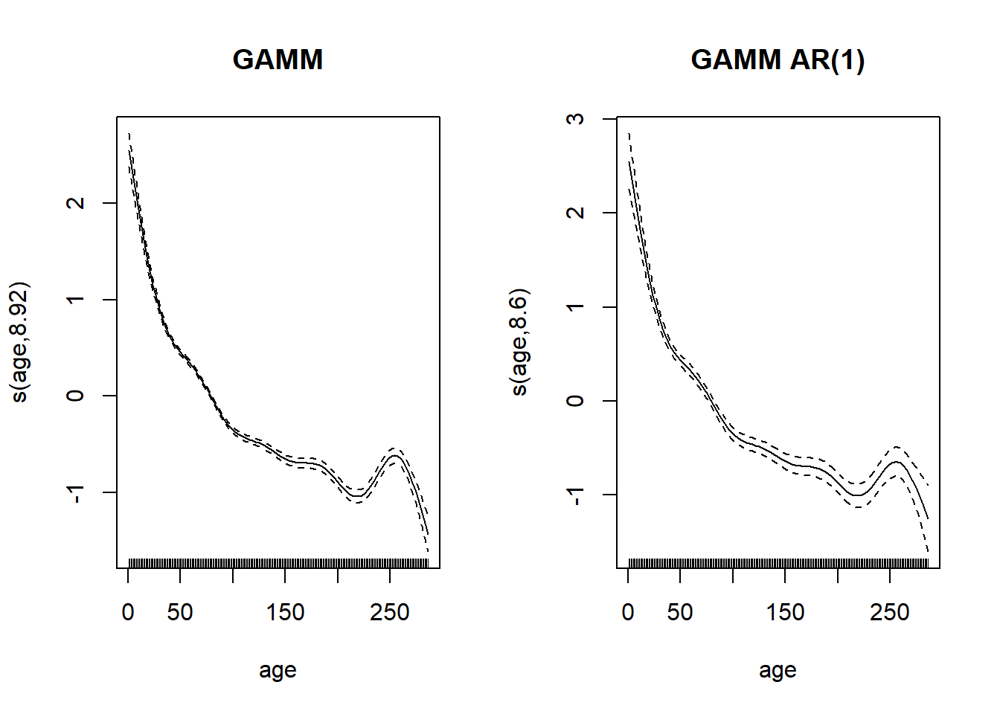
Pour spécifier un modèle ARMA plus général, nous pourrions utiliser corARMA, ex.: correlation = corARMA(form = ~ 1 | id_arbre, p = 2, q = 1) pour un modèle AR(2), MA(1).
La fonction lme du package nlme offre la même fonctionnalité pour les modèles linéaires mixtes (sans effets additifs), avec les mêmes arguments randomet correlation.
Les modèles mixtes spécifiés avec gamm et lme comportent certaines limites. D’abord, ces fonctions sont moins bien adaptées à l’ajustement de modèles généralisés (distributions autres que normale pour la réponse). Aussi, elles ne permettent pas d’effets aléatoires multiples, sauf si ceux-ci sont nichés.
Pour ces raisons, les modèles bayésiens (avec brms) offrent l’option la plus flexible pour combiner des effets aléatoires et corrélations temporelles dans un même modèle.
Version bayésienne du modèle avec brms
La fonction brm reconnaît les termes de spline s(), comme dans un gam. Le terme de corrélation temporelle est quant à lui spécifié par ar(p = 1, gr = id_arbre), qui signifie une corrélation AR(1) à l’intérieur des groupes définis par id_arbre.
library(brms)
wa_br <- brm(log(cst) ~ log(st) + s(age) + (1 | id_arbre) + ar(p = 1, gr = id_arbre),
data = wa, chains = 2)Au lieu de ar(p = ...), nous aurions pu spécifier un modèle MA avec ma(q = ...) ou ARMA avec arma(p = ..., q = ...).
Notez que dans cet exemple, on laisse brms choisir des distributions a priori par défaut. Pour les splines en particulier, il est difficile de déterminer ces distributions et les choix par défaut sont raisonnables, surtout avec beaucoup de données.
Dans le sommaire des résultats, nous obtenons le même coefficient de corrélation AR(1) que pour le modèle gamm ci-dessus.
summary(wa_br)## Warning: There were 1 divergent transitions after warmup. Increasing adapt_delta
## above 0.8 may help. See http://mc-stan.org/misc/warnings.html#divergent-
## transitions-after-warmup## Family: gaussian
## Links: mu = identity; sigma = identity
## Formula: log(cst) ~ log(st) + s(age) + (1 | id_arbre) + ar(p = 1, gr = id_arbre)
## Data: wa (Number of observations: 4536)
## Samples: 2 chains, each with iter = 2000; warmup = 1000; thin = 1;
## total post-warmup samples = 2000
##
## Smooth Terms:
## Estimate Est.Error l-95% CI u-95% CI Rhat Bulk_ESS Tail_ESS
## sds(sage_1) 5.97 1.78 3.36 10.20 1.01 435 720
##
## Correlation Structures:
## Estimate Est.Error l-95% CI u-95% CI Rhat Bulk_ESS Tail_ESS
## ar[1] 0.69 0.01 0.67 0.71 1.00 2156 1487
##
## Group-Level Effects:
## ~id_arbre (Number of levels: 23)
## Estimate Est.Error l-95% CI u-95% CI Rhat Bulk_ESS Tail_ESS
## sd(Intercept) 0.18 0.04 0.13 0.26 1.00 414 828
##
## Population-Level Effects:
## Estimate Est.Error l-95% CI u-95% CI Rhat Bulk_ESS Tail_ESS
## Intercept -2.51 0.21 -2.92 -2.08 1.00 769 1052
## logst 0.86 0.02 0.82 0.90 1.00 836 1167
## sage_1 -22.60 2.65 -27.85 -17.38 1.00 721 877
##
## Family Specific Parameters:
## Estimate Est.Error l-95% CI u-95% CI Rhat Bulk_ESS Tail_ESS
## sigma 0.27 0.00 0.27 0.28 1.00 2393 1457
##
## Samples were drawn using sampling(NUTS). For each parameter, Bulk_ESS
## and Tail_ESS are effective sample size measures, and Rhat is the potential
## scale reduction factor on split chains (at convergence, Rhat = 1).Finalement, nous pouvons visualiser la spline de croissance en fonction de l’âge avec la fonction marginal_smooths.
marginal_smooths(wa_br)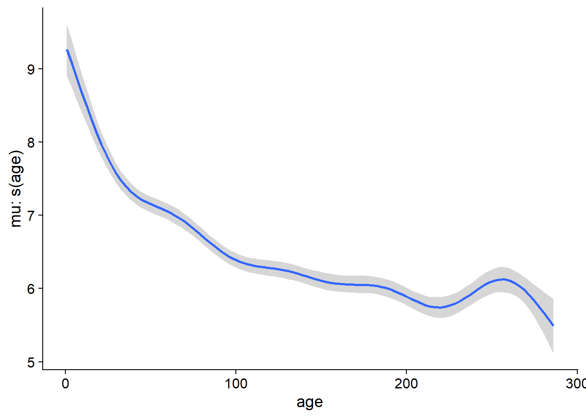
Référence
Hyndman, R.J. et Athanasopoulos, G. (2019) Forecasting: principles and practice, 3e édition, OTexts: Melbourne, Australia. http://OTexts.com/fpp3.